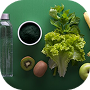

1. Cold & Cough Care
Simple comfort measures for a sore throat, cough and common cold symptoms.
Read more →Explore simple home-care practices and wellness tips that may help you feel more comfortable during everyday health concerns.
Simple comfort measures for a sore throat, cough and common cold symptoms.
Read more →
General tips for hydration and gentle eating when experiencing mild digestive discomfort.
Read more →No matching home-care tips found. Try another search.
Home-care practices may provide comfort, but they are not a substitute for professional medical advice. Seek medical care for severe, persistent, or worsening symptoms. Do not delay urgent care to try a home remedy.
MediSense AI provides general educational wellness information only. Home-care tips are not a diagnosis or treatment plan. Always consult a qualified healthcare professional when needed.